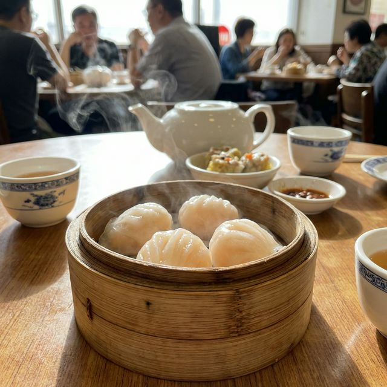

食材准备
- 主料： 鲜虾仁 300g
- 皮料： 澄面 (小麦淀粉) 150g, 生粉 50g
- 配菜： 熟猪油、笋丝 (可选) 适量
- 调料： 盐、白糖、胡椒粉 适量
- 调料： 香油 适量
烹饪步骤
准备虾馅
虾仁去虾线，一半剁碎，一半切段。加入盐、糖、胡椒粉、香油和少许生粉，顺时针搅拌至起胶。最后拌入熟猪油和笋丝。
烫面制皮
将澄面和生粉混合，冲入沸水并快速搅拌成团。稍微降温后揉入少许猪油至表面光滑。加盖醒发10分钟。
包制
将面团下剂，压成薄圆皮。放入虾馅，用传统的梳子褶方法捏合。动作要轻，防止皮破。
蒸制
笼屉底部刷油或铺上垫纸。水开后放入虾饺，大火蒸5-6分钟即可。注意不要蒸过火，否则皮会失去韧性。
出笼享用
蒸好的虾饺皮晶莹剔透，可见内部红润虾仁。早晨一壶好茶，两件点心，正是地道的广式生活。